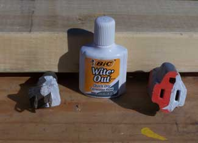

BOB JOHNSTON
Get some Wite-Out and paint the wide prong side white (wide — white). This is the white (neutral) wire in the cord. Then you won’t have to look each time and try to figure out which way the prongs fit.